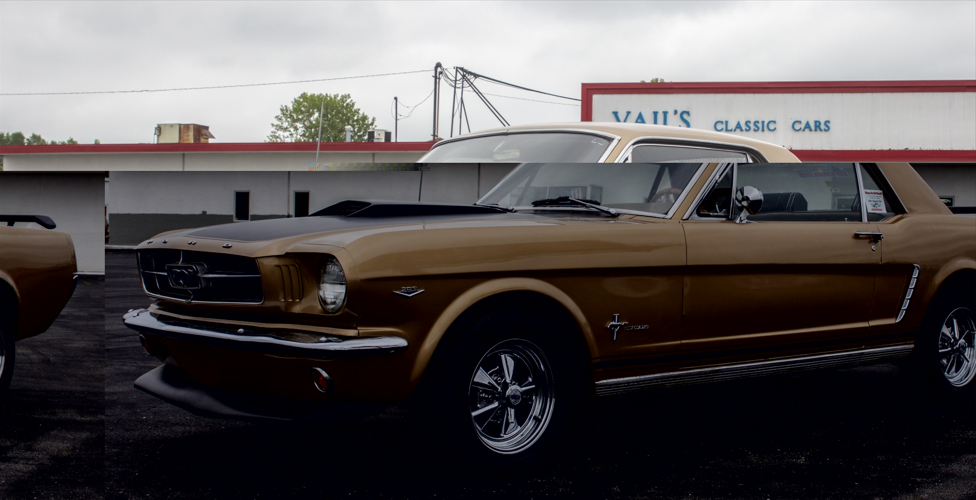
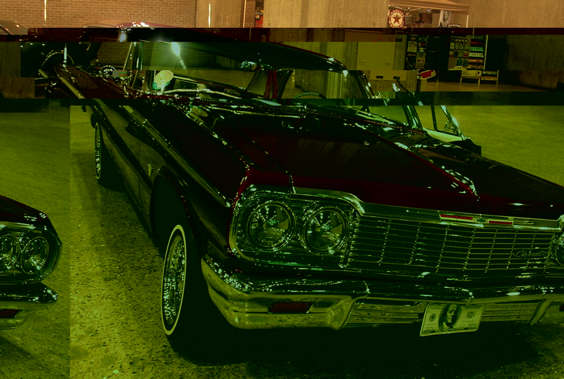
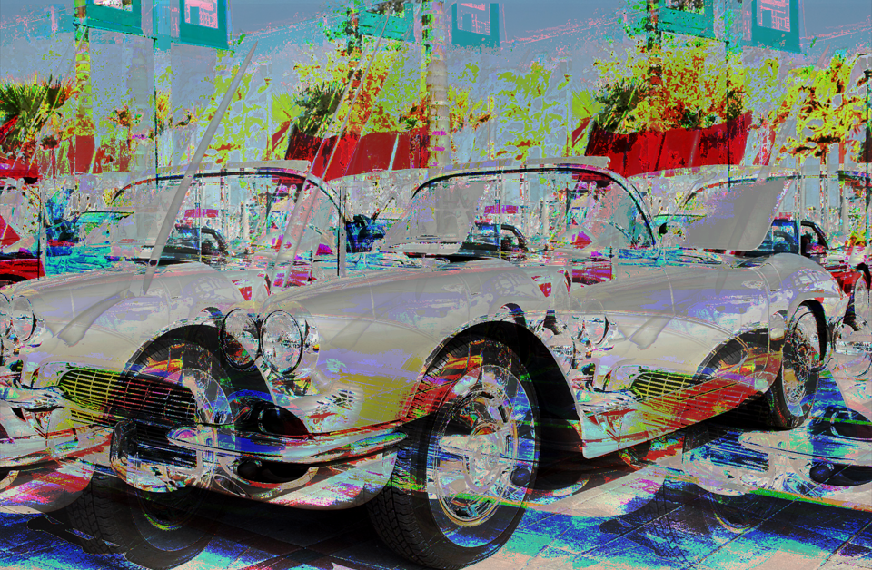

Glitch Page
These are glitched images of classic cars from the years of 1970's. I decided to do classic cars since these type of cars have some type of class to them, back when cars looked nice and unique not modern or simple. By making them have a glitch affect it makes the cars have a more vintage and classic design.


